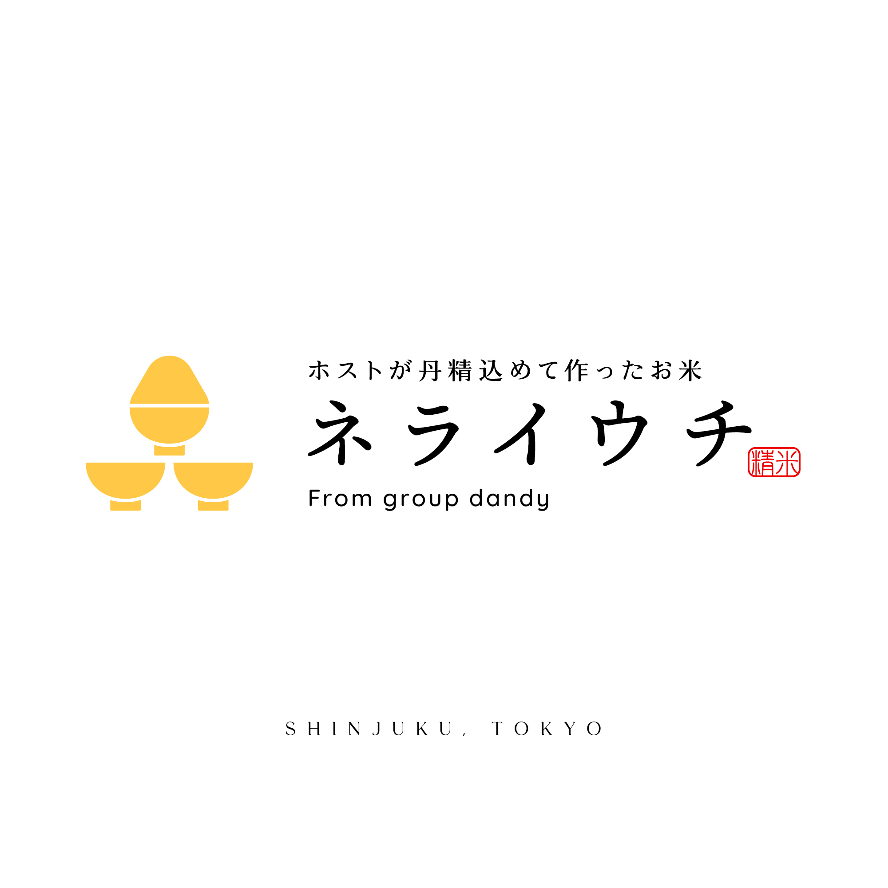
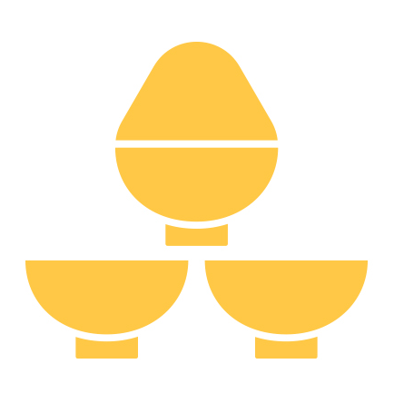

01 / BELIEVABILITY
架空でも、実在しそうに。
嘘企画だからこそ、デザインで過剰に笑わせない。情報量と余白を整理し、実際の商品を思わせる佇まいを目指した。
> loading portfolio
IDENTITY / CONCEPT BRANDING
ホストが丹精込めて作ったお米。
A fictional rice brand for an April Fools’ campaign.

01_context/
Xのエイプリルフール企画として、「ホストグループが丹精込めて作ったお米を発売する」という架空の告知のために制作。ユーモラスな発想を、あえて実在しそうなブランド表現に落とし込んだ。
02_concept/
「お米」と「ホスト文化」。遠い2つのモチーフを、ひとつの記号へ。

01 / RICE BOWLS
「米」を直感的に伝える、日常的な器。
02 / CHAMPAGNE TOWER
ホスト文化の華やかさを想起させる形。
03_design-decisions/
01 / BELIEVABILITY
嘘企画だからこそ、デザインで過剰に笑わせない。情報量と余白を整理し、実際の商品を思わせる佇まいを目指した。
02 / SYMBOL
茶碗とシャンパンタワーの共通する積層構造を使い、企画の意外性をシンプルなシルエットにまとめた。
03 / TONE
金色のシンボル、和文のロゴタイプ、朱色の印章を組み合わせ、米の親しみやすさと贈答品のような品格を両立。